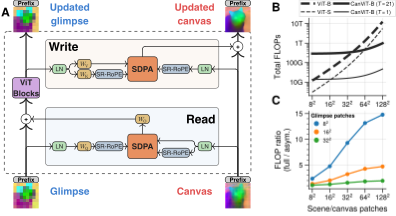
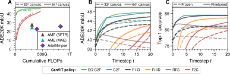

Any viewpoint, any order
Pretrained on random glimpse centers, zoom levels and sequence lengths; policies it never trained with, such as coarse-to-fine and EG-C2F, drive it without retraining.
2026
Canvas Vision Transformer
1McGill University 2Mila – Quebec AI Institute 3Université Laval
A backbone that thinks about one glimpse at a time, bound to a canvas that remembers the whole scene.
Pretrained on random glimpse centers, zoom levels and sequence lengths; policies it never trained with, such as coarse-to-fine and EG-C2F, drive it without retraining.
A frozen CanViT-B reaches 38.5% ADE20K mIoU from a single 128 px glimpse of the whole scene, read out by a linear probe.
The canvas grid is set when the model runs. Trained with a 32 × 32 canvas, CanViT-B segments better with a 64 × 64 one.
Pretrained from scratch on 13.2 million ImageNet-21k scenes and 1 billion glimpses, in 166 hours on one H100.



Because the canvas is spatial and cheap to decode, the model's own uncertainty can choose where it looks next. Entropy-Guided C2F (EG-C2F) walks a quadtree from coarse to fine: the full scene, then 4 quadrants, then 16 tiles. Within each level, the next glimpse goes to the unvisited tile where the decoded classes have the highest mean entropy. It needs no training.
EG-C2F on an ADE20K validation scene, 21 glimpses, 64 × 64 canvas. Uncertainty is the entropy of the decoded class distribution on a fixed scale, from 0 to its maximum, log 150. Hover or tap any panel to mark the same point in all of them.

ADE20K, CanViT-B frozen, one 128 px glimpse of the whole scene
ADE20K, CanViT-B frozen, after 21 glimpses (C2F, 642 canvas)
ImageNet-1k, CanViT-B fine-tuned
ADE20K, best prior active model, using 20× the inference FLOPs of CanViT-B's single glimpse
Active computer vision promises efficient, biologically plausible perception through sequential, localized glimpses, but lacks scalable general-purpose architectures and pretraining pipelines, leaving Active-Vision Foundation Models (AVFMs) underexplored. We introduce CanViT, the first task- and policy-agnostic AVFM. CanViT uses scene-relative RoPE to bind a retinotopic Vision Transformer backbone and a spatiotopic scene-wide latent workspace, the canvas. Efficient interaction with this high-capacity working memory is supported by Canvas Attention, a novel asymmetric cross-attention mechanism. We decouple thinking (backbone-level) and memory (canvas-level), eliminating canvas-side self-attention and fully-connected layers to achieve fast sequential inference and scalability to high output resolutions. We propose a label-free active vision pretraining scheme, policy-agnostic passive-to-active dense latent distillation: reconstructing scene-wide DINOv3 embeddings from sequences of low-resolution glimpses with randomized locations, zoom levels, and lengths. We pretrain CanViT-B from a random initialization on 13.2 million ImageNet-21k scenes—an order of magnitude more than previous active models—and 1 billion random glimpses, in 166 hours on a single H100. On ADE20K segmentation, a frozen CanViT-B achieves 38.5% mIoU in a single low-resolution glimpse, outperforming the best active model's 27.6% with 20x fewer inference FLOPs as well as its FLOP- or input-matched DINOv3 teacher. Given additional glimpses, CanViT-B reaches 45.9% ADE20K mIoU. On ImageNet-1k classification, CanViT-B also sets a new active-vision state of the art, with 84.5% top-1 accuracy after fine-tuning. CanViT generalizes to longer rollouts, larger scenes, and new policies. Our work narrows the wide gap between passive and active computer vision, demonstrating the potential of task- and policy-agnostic AVFM pretraining.
@article{berreby2026canvit,
title={CanViT: Toward Active-Vision Foundation Models},
author={Berreby, Yoha{\"i}-Eliel and Du, Sabrina and Durand, Audrey and Krishna, B. Suresh},
year={2026},
eprint={2603.22570},
archivePrefix={arXiv},
primaryClass={cs.CV},
url={https://arxiv.org/abs/2603.22570}
}